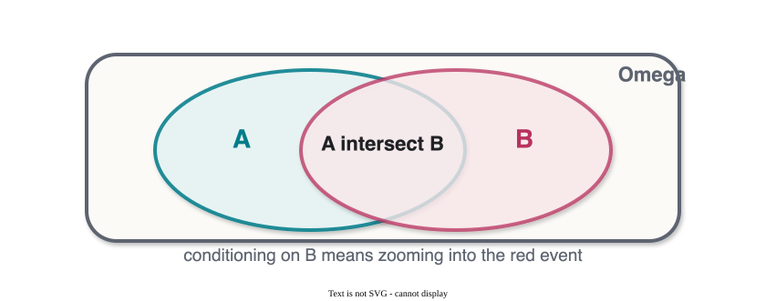

CS 463G & CS 663
(Intro to) AI
Lecture 20: Probability
Fall 2026
Probability is the language AI uses when the world is uncertain, noisy, or only partially observed.
| Area | What is uncertain? |
|---|---|
| Robotics | Sensor readings, action outcomes |
| Machine learning | Labels, parameters, predictions |
| NLP | Intended meaning, next word, speech signal |
| Computer vision | Occlusion, lighting, object identity |
| Reinforcement learning | Transitions and rewards |
Logic asks what must be true. Probability asks how strongly we should believe something under uncertainty.
A probability model has three pieces.
\Omega
All possible outcomes.
\mathcal{F}
Subsets of \Omega that we assign probabilities to.
P: \mathcal{F} \rightarrow \mathbb{R}
Maps events to probabilities.

For any event A:
P(A) \geq 0
For the full sample space:
P(\Omega)=1
For disjoint events A_1,A_2,\ldots:
P\left(\bigcup_i A_i\right)=\sum_i P(A_i)
Everything else we use in probabilistic AI is built on these rules.
Conditional probability updates attention to the part of the sample space where B happened.
P(A \mid B)=\frac{P(A \cap B)}{P(B)}, \qquad P(B) \neq 0
Read P(A \mid B) as: probability of A after learning B.
Two events are independent when learning one does not change the probability of the other.
P(A \cap B)=P(A)P(B)
Equivalently, if P(B)>0:
P(A \mid B)=P(A)
Independence is an assumption about information, not just a formula to memorize.
Let:
P(A)=\frac{4}{52}, \qquad P(B)=\frac{13}{52}, \qquad P(A \cap B)=\frac{1}{52}
P(A \mid B)=\frac{1/52}{13/52}=\frac{1}{13}
For “king” and “heart”:
P(A \cap B)=\frac{1}{52}
P(A)P(B)=\frac{4}{52}\cdot\frac{13}{52}=\frac{52}{2704}=\frac{1}{52}
So drawing a heart does not change the chance that the card is a king.
A random variable maps outcomes to values.
| Type | Values | Example | Distribution |
|---|---|---|---|
| Discrete | Countable | Number of heads | PMF |
| Continuous | Real-valued range | Temperature |
Two summary quantities:
E[X] \quad \text{and} \quad Var(X)
Random variables let us reason about useful features of outcomes, not just outcomes themselves.
P(X,Y)
How two variables behave together.
P(X)=\sum_y P(X,y)
One variable after summing out another.
P(X \mid Y)=\frac{P(X,Y)}{P(Y)}
One variable after observing another.
For continuous variables, replace sums with integrals.
f_{X_1}(x_1)= \int \cdots \int f_{X_1,\ldots,X_n}(x_1,\ldots,x_n) \,dx_2\cdots dx_n
f_{X_1 \mid X_2,\ldots,X_n} = \frac{f_{X_1,\ldots,X_n}}{f_{X_2,\ldots,X_n}}
Same idea as the discrete case: marginalize what you do not need, condition on what you observe.
The joint distribution can always be decomposed into conditionals:
P(x_1,\ldots,x_n) = P(x_n \mid x_1,\ldots,x_{n-1}) \cdots P(x_2 \mid x_1)P(x_1)
Bayesian networks will use this idea, plus independence assumptions, to represent large distributions compactly.
A multivariate Gaussian models a vector of continuous variables.
f(\mathbf{x} \mid \boldsymbol{\mu}, \boldsymbol{\Sigma}) = \frac{1}{(2\pi)^{k/2}|\boldsymbol{\Sigma}|^{1/2}} \exp\left( -\frac{1}{2} (\mathbf{x}-\boldsymbol{\mu})^T \boldsymbol{\Sigma}^{-1} (\mathbf{x}-\boldsymbol{\mu}) \right)
\boldsymbol{\mu} controls the center.
\boldsymbol{\Sigma} controls spread and correlation.
Starting from conditional probability:
P(A \mid B)=\frac{P(B \mid A)P(A)}{P(B)}
For a binary hypothesis H:
P(H \mid E)= \frac{P(E \mid H)P(H)} {P(E \mid H)P(H)+P(E \mid \neg H)P(\neg H)}
Bayes’ rule updates a prior belief after seeing evidence.
Given:
P(S)=0.3,\quad P(K \mid S)=0.6,\quad P(K \mid \neg S)=0.2
Evidence probability:
P(K)=0.6(0.3)+0.2(0.7)=0.32
Posterior:
P(S \mid K)=\frac{0.6(0.3)}{0.32}=0.5625
Given:
P(D)=0.01,\quad P(+ \mid D)=0.95,\quad P(+ \mid \neg D)=0.05
P(+)=0.95(0.01)+0.05(0.99)=0.059
P(D \mid +)=\frac{0.95(0.01)}{0.059}\approx 0.161
Even a good test can have a low posterior when the disease is rare.
Given:
P(Y=3)=0.15,\qquad P(X>0.5 \mid Y=3)=0.6
Use:
P(A,B)=P(A \mid B)P(B)
P(X>0.5, Y=3)=0.6 \cdot 0.15 = 0.09
Denoising Diffusion Probabilistic Models use two probabilistic processes.
q(x_t \mid x_{t-1}) = \mathcal{N}(x_t;\sqrt{1-\beta_t}x_{t-1},\beta_t I)
p(x_{t-1} \mid x_t) = \mathcal{N}(x_{t-1};\mu_\theta(x_t,t),\Sigma_\theta(x_t,t))
The model learns how to reverse a gradual noising process.